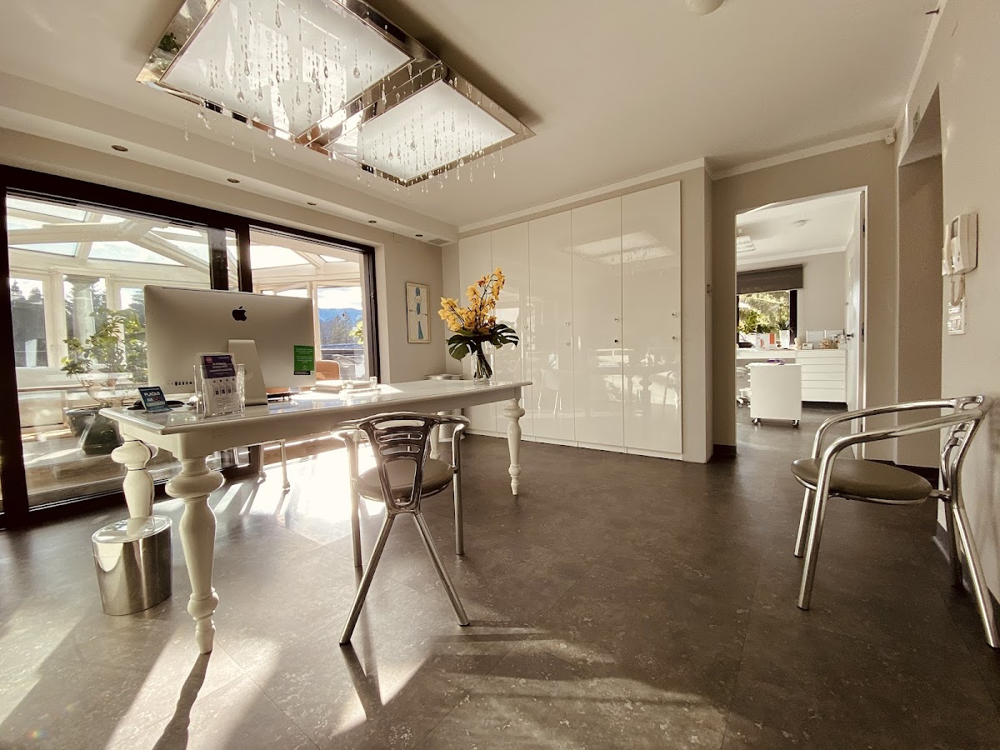
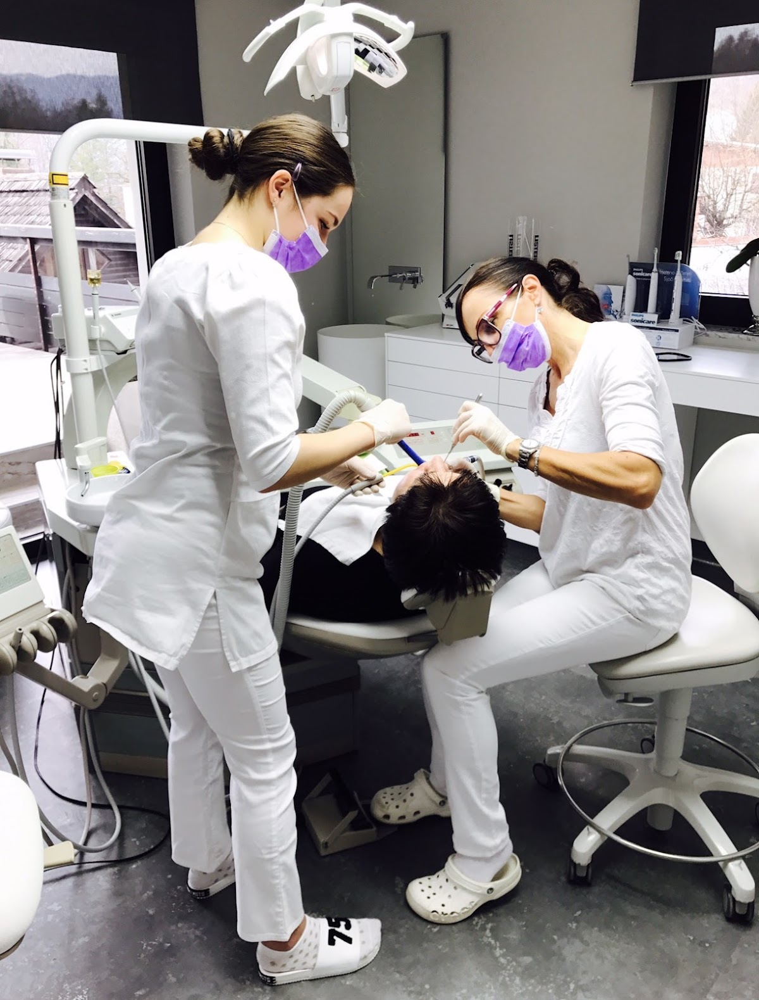
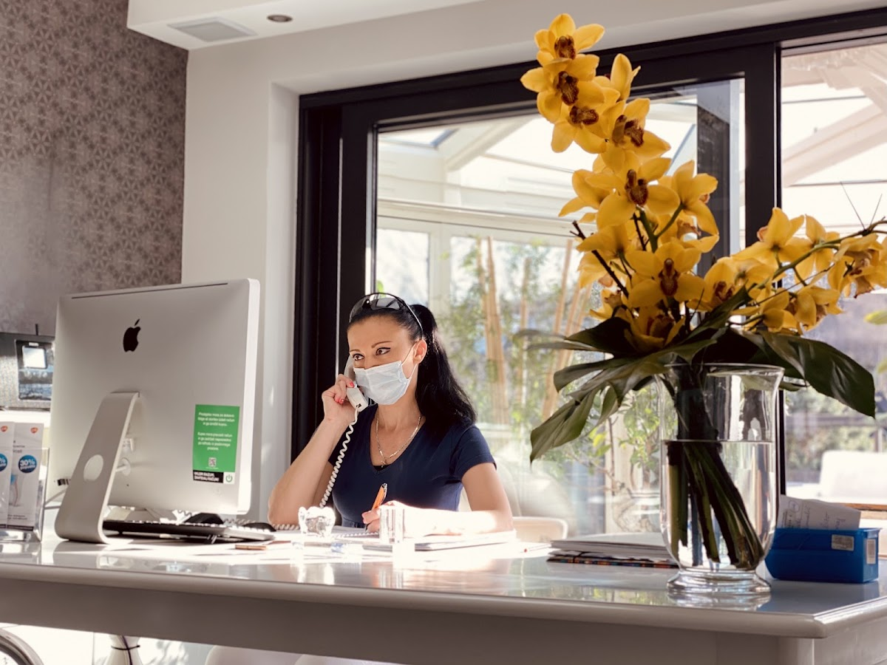
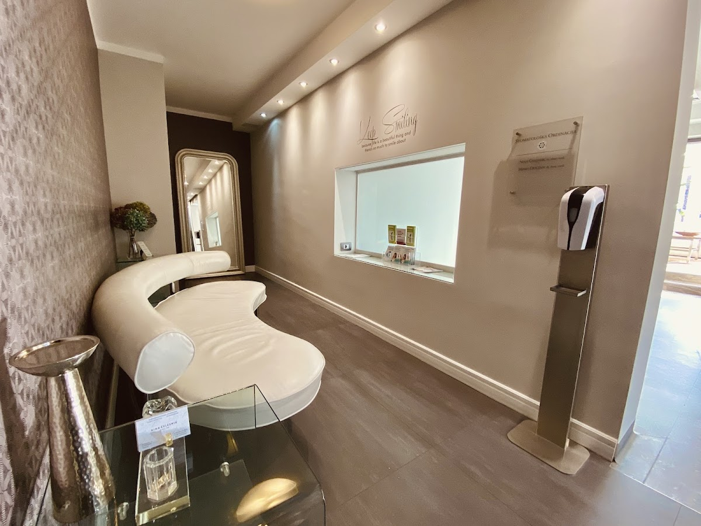
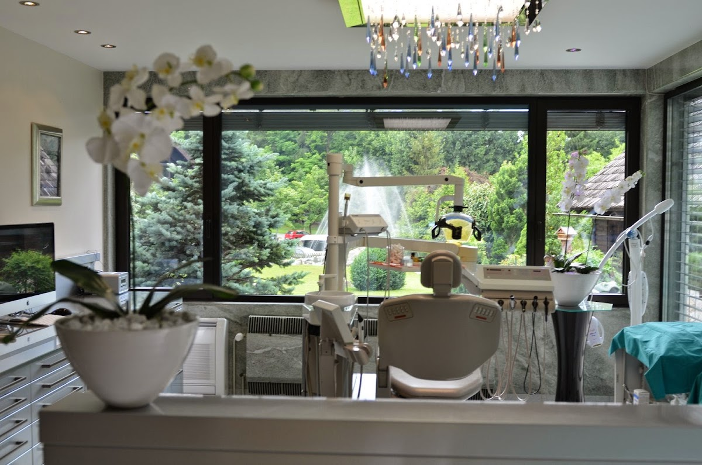
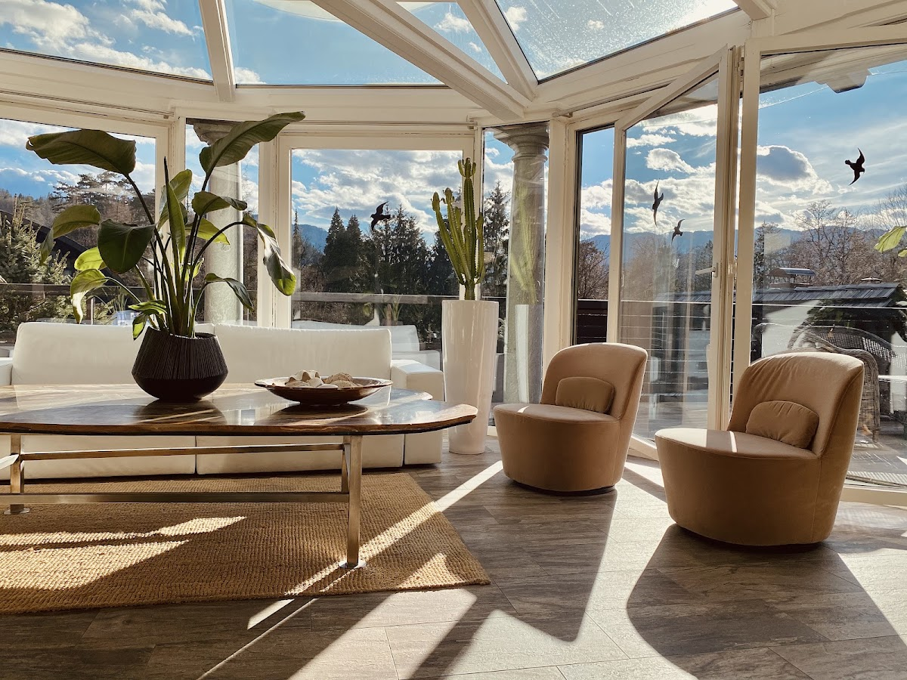

O ordinaciji
O ordinaciji
Zobna ordinacija dr. Nine Celesnik na Bledu je znana po strokovnem in prijaznem pristopu. Mnogi pacienti se na ordinacijo obračajo že dolga leta. Posebno pohvaljena je odzivnost v nujnih primerih, ko je pomoč na voljo tudi izven rednega delovnega časa. Ordinacija je dostopna na Prešernovi cesti 15, kjer vas sprejme ekipa z izkušnjami in posluhom za posameznika.


Skrb za vaše zobe in zdravje v prijetnem okolju ordinacije dr. Nine Celesnik.
Zakaj izbrati nas

Nujna pomoč
Pacienti omenjajo hitro odzivnost in sprejem tudi v nujnih primerih, brez predhodnega naročanja.

Dolgoletni pacienti
Nekateri obiskujejo ordinacijo že dvajset let, kar priča o zaupanju in stalnosti.

Prijazno osebje
Več mnenj poudarja prijaznost in profesionalnost ekipe, ki se posveti vsakemu pacientu.
Kaj pričakovati
Kaj pričakovati
Ordinacija nudi zobozdravstvene storitve v urejenem okolju. Pacienti opisujejo izkušnjo kot strokovno in osebno. Sprejem je možen tudi v nujnih primerih, brez zapletenih postopkov. Osebje je prijazno in pripravljeno prisluhniti vašim potrebam.

Kontakt
Stopite v stik
Za vprašanja ali naročanje pokličite ordinacijo. V nujnih primerih je možen hiter sprejem. Pokličite za več informacij.
Lokacija in okolica
Ordinacija se nahaja na Prešernovi cesti 15 v središču Bleda. V bližini so dostopne osnovne storitve in parkirišča. Lokacija je primerna za domačine in obiskovalce Bleda, saj je lahko dosegljiva z različnih smeri.